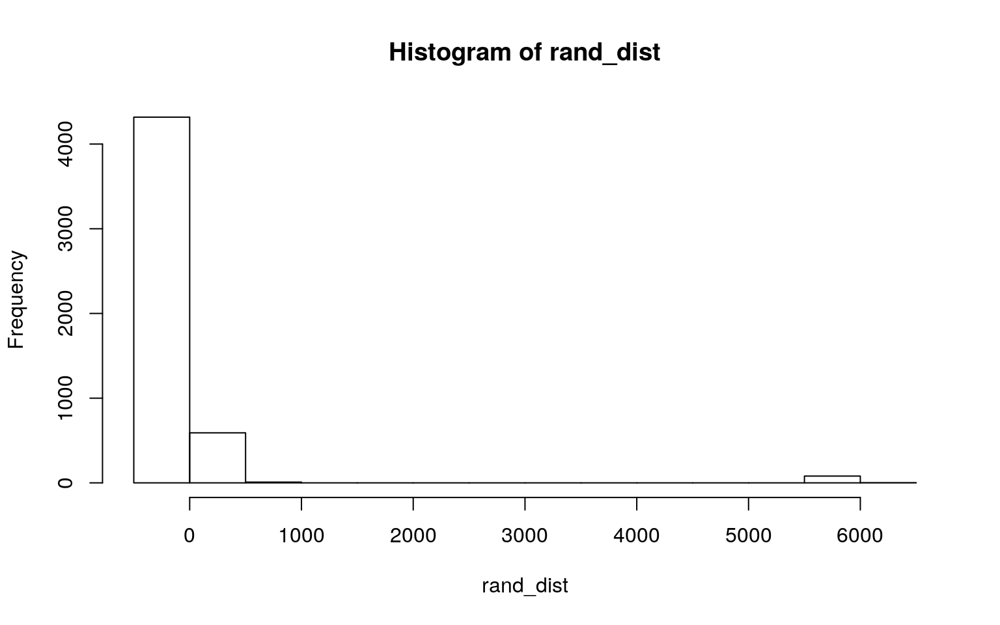
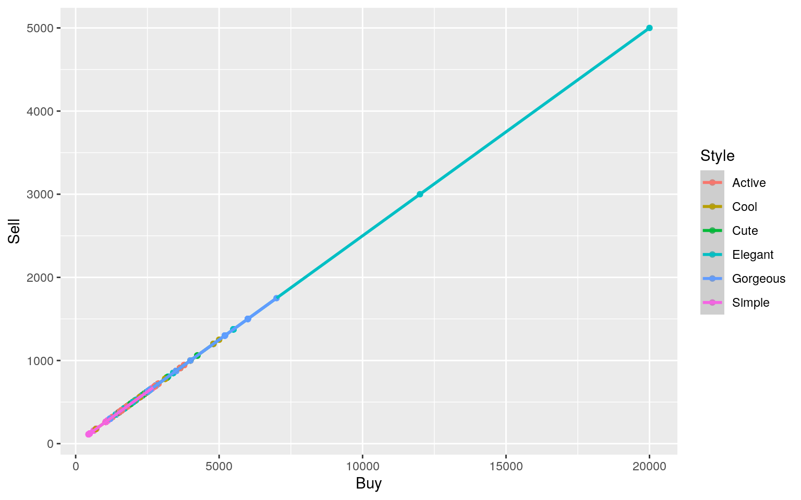
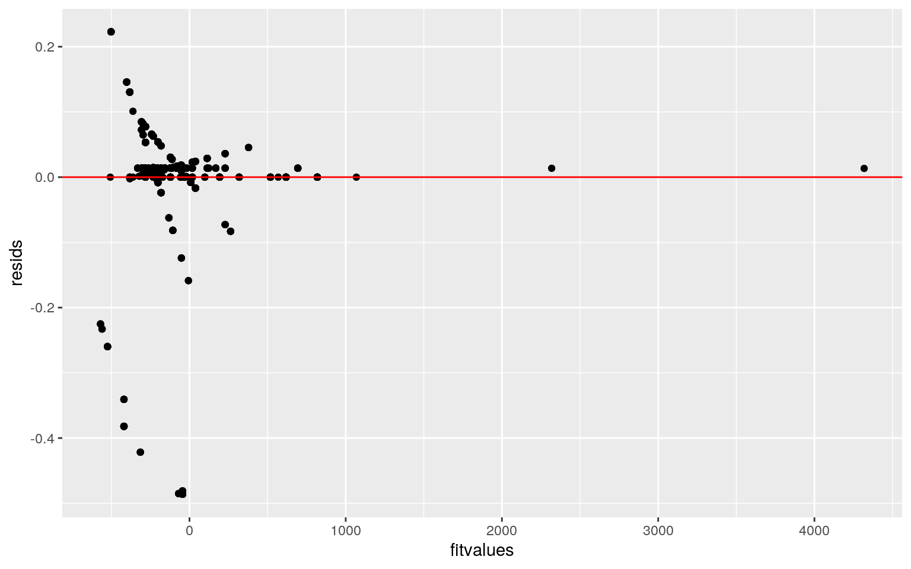
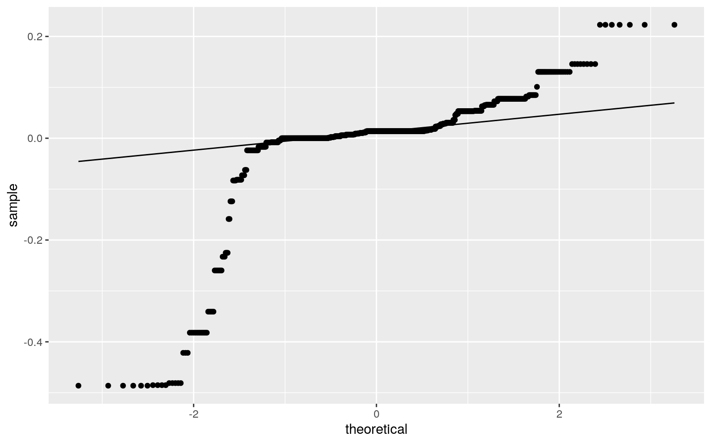
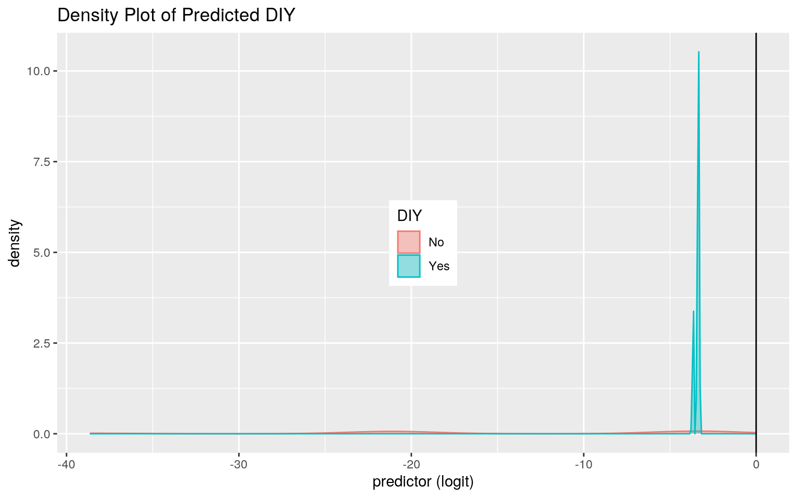
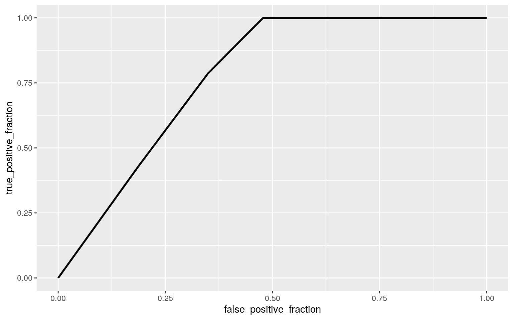

library(tidyverse)
acnh <- read_csv("~/acnh.csv")
acnh <- acnh %>% rename("Seasonal_Avail"= "Seasonal Availability")
#acnh$item <- paste(acnh$Name, acnh$Variation, sep="_")
nrow(acnh)## [1] 913The data set contains the 913 (observations) clothing items in Animal Crossing New Horizons (ACNH) game.For each clothing item, it contains the purchase and selling price in bells. The data set also contains information whether the clothing item is a craftable DIY. It also contains where and when the item can be obtained in the game, which is labeled in the Source and Seasonal_Avail column.It also contains which style the clothing time falls under whether it is active, cool, cute, elegant, gorgeous, or simple.
man <- manova(cbind(Buy, Sell)~Style,data=acnh)
summary(man, tol=0)## Df Pillai approx F num Df den Df Pr(>F)
## Style 5 0.24793 25.244 10 1784 < 2.2e-16 ***
## Residuals 892
## ---
## Signif. codes: 0 '***' 0.001 '**' 0.01 '*' 0.05 '.' 0.1
' ' 1summary(aov(Buy~Style,data=acnh))## Df Sum Sq Mean Sq F value Pr(>F)
## Style 5 280250257 56050051 52.07 <2e-16 ***
## Residuals 892 960211122 1076470
## ---
## Signif. codes: 0 '***' 0.001 '**' 0.01 '*' 0.05 '.' 0.1
' ' 1
## 15 observations deleted due to missingnesssummary(aov(Sell~Style,data=acnh))## Df Sum Sq Mean Sq F value Pr(>F)
## Style 5 1.416e+08 28326829 4.068 0.00117 **
## Residuals 907 6.315e+09 6962603
## ---
## Signif. codes: 0 '***' 0.001 '**' 0.01 '*' 0.05 '.' 0.1
' ' 1pairwise.t.test(acnh$Buy,acnh$Style, p.adj="none")##
## Pairwise comparisons using t tests with pooled SD
##
## data: acnh$Buy and acnh$Style
##
## Active Cool Cute Elegant Gorgeous
## Cool 0.024 - - - -
## Cute 0.810 0.033 - - -
## Elegant 1.4e-05 0.766 2.6e-05 - -
## Gorgeous < 2e-16 1.4e-08 < 2e-16 9.9e-16 -
## Simple 4.9e-07 9.1e-08 8.1e-08 < 2e-16 < 2e-16
##
## P value adjustment method: nonepairwise.t.test(acnh$Sell,acnh$Style, p.adj="none")##
## Pairwise comparisons using t tests with pooled SD
##
## data: acnh$Sell and acnh$Style
##
## Active Cool Cute Elegant Gorgeous
## Cool 0.64686 - - - -
## Cute 0.96759 0.66174 - - -
## Elegant 0.72503 0.79934 0.75039 - -
## Gorgeous 0.00015 0.02931 0.00014 0.00034 -
## Simple 0.55813 0.41476 0.52474 0.34908 3.4e-05
##
## P value adjustment method: none1-0.95^5## [1] 0.22621910.05/5## [1] 0.01A MANOVA test was used to determine if whether the numeric variables (Buy & Sell) show a mean difference across the different groups of clothing styles. It was concluded that there is a significant mean difference between the groups of styles due to the critical value of less that 0.01. Afterwards univarate ANOVAS were performed to determine that all the responses show a mean difference across the groups. A post-hoc t test was also used to determine with groups differed. The post hoc test the purchase price was significant for all the groups besides Active & Cool, Active & Cute, Cute & Cool, and Cool & Elegant. The post hoc test for the selling price was significant for Active & Gorgeous, Cute & Gorgeous, Elegant & Gorgeous, and Gorgeous & Simple. A total of 5 tests were performed, the probability of at least one type 1 error is 0.226; therefore, a significant level of 0.01 should be used to keep the overall type I error rate at 0.05.
The MANOVA test assumptions include: a random sample with independent observations, the dependent variables have multivariate normality, homogeneity of within-group covariance matrices, linear relationship among dependent variable, no extreme univariate or multivariate outliers, no multicollinearity. The data likely met the multivariate normality assumption. However, the data had outliers, therefore, failed to meet the assumption that no outliers were present.
acnh_ran <- acnh %>% select(DIY, Sell) %>% as.data.frame()
t.test(Sell~DIY,data = acnh_ran)##
## Welch Two Sample t-test
##
## data: Sell by DIY
## t = -1.2848, df = 13, p-value = 0.2213
## alternative hypothesis: true difference in means is not
equal to 0
## 95 percent confidence interval:
## -19229.297 4887.096
## sample estimates:
## mean in group No mean in group Yes
## 571.7564 7742.8571rand_dist<-vector()
for(i in 1:5000){
new<-data.frame(Sell=sample(acnh_ran$Sell),DIY=acnh_ran$DIY)
rand_dist[i]<-mean(new[new$DIY=="Yes",]$Sell)-
mean(new[new$DIY=="No",]$Sell)}
acnh_ran %>% group_by(DIY) %>% summarise(S=mean(Sell)) %>% summarize(diff(S))## # A tibble: 1 x 1
## `diff(S)`
## <dbl>
## 1 7171.{hist(rand_dist); abline(v=c(-7171.101, 7171.101), col='red')}
#p-value
mean(rand_dist > 7171.101)*2 ## [1] 0A mean difference randomization test was performed to determine whether or not the selling price of the clothing items differ depending on if they are DIY items or non-DIY items.
Null Hypothesis: The selling price is the same for DIYs and non-DIYs clothing items.
Alternative Hypothesis: The selling price is different for the DIYs and non-DIYs clothing items.
After performing the test, the p-value was determined to be 0. From the p-value, it is determined that there is significant difference in the selling price between DIY and non-DIY clothing items.
library(lmtest); library(sandwich)
acnh$Buy_c <- acnh$Buy - mean(acnh$Buy, na.rm = T)
acnh$Sell_c <- acnh$Sell - mean(acnh$Sell, na.rm = T)
lm <- lm(Sell_c~Buy_c*Style, data=acnh)
summary(lm)##
## Call:
## lm(formula = Sell_c ~ Buy_c * Style, data = acnh)
##
## Residuals:
## Min 1Q Median 3Q Max
## -0.48618 0.00000 0.01383 0.02377 0.22287
##
## Coefficients:
## Estimate Std. Error t value Pr(>|t|)
## (Intercept) -1.093e+02 7.673e-03 -14248.836 < 2e-16 ***
## Buy_c 2.501e-01 1.200e-05 20836.920 < 2e-16 ***
## StyleCool 2.667e-02 1.754e-02 1.520 0.12877
## StyleCute 1.186e-02 1.056e-02 1.122 0.26197
## StyleElegant 1.284e-02 1.030e-02 1.247 0.21279
## StyleGorgeous 2.667e-02 1.566e-02 1.703 0.08895 .
## StyleSimple 1.063e-01 1.631e-02 6.515 1.21e-10 ***
## Buy_c:StyleCool -7.362e-05 2.023e-05 -3.639 0.00029 ***
## Buy_c:StyleCute -8.933e-05 1.708e-05 -5.231 2.11e-07 ***
## Buy_c:StyleElegant -7.360e-05 1.277e-05 -5.765 1.13e-08
***
## Buy_c:StyleGorgeous -7.362e-05 1.375e-05 -5.356 1.09e-07
***
## Buy_c:StyleSimple 1.191e-04 1.987e-05 5.991 3.02e-09 ***
## ---
## Signif. codes: 0 '***' 0.001 '**' 0.01 '*' 0.05 '.' 0.1
' ' 1
##
## Residual standard error: 0.09974 on 886 degrees of
freedom
## (15 observations deleted due to missingness)
## Multiple R-squared: 1, Adjusted R-squared: 1
## F-statistic: 7.086e+08 on 11 and 886 DF, p-value: <
2.2e-16acnh %>% select(Sell, Buy, Style) %>% na.omit %>% ggplot(aes(Buy, Sell, color=Style)) +
geom_point(aes(color=Style))+geom_smooth(method="lm") 
resids <- lm$residuals
fitvalues <-lm$fitted.values
ggplot() + geom_point(aes(fitvalues, resids)) + geom_hline(yintercept = 0, color = "red")
ggplot() + geom_qq(aes(sample = resids))+ geom_qq_line(aes(sample=resids))
shapiro.test(resids) #Ho: true distribution ir normal ##
## Shapiro-Wilk normality test
##
## data: resids
## W = 0.56876, p-value < 2.2e-16bptest(lm) #Ho: homoskedatic##
## studentized Breusch-Pagan test
##
## data: lm
## BP = 92.208, df = 11, p-value = 6.149e-15coeftest(lm, vcov=vcovHC(lm))##
## t test of coefficients:
##
## Estimate Std. Error t value Pr(>|t|)
## (Intercept) -1.0934e+02 7.9816e-03 -13698.7002 < 2.2e-16
***
## Buy_c 2.5007e-01 2.1538e-05 11610.5785 < 2.2e-16 ***
## StyleCool 2.6671e-02 7.9816e-03 3.3416 0.0008678 ***
## StyleCute 1.1856e-02 1.0366e-02 1.1437 0.2530498
## StyleElegant 1.2840e-02 9.7488e-03 1.3171 0.1881565
## StyleGorgeous 2.6671e-02 7.9816e-03 3.3416 0.0008678 ***
## StyleSimple 1.0626e-01 1.8773e-02 5.6605 2.038e-08 ***
## Buy_c:StyleCool -7.3620e-05 2.1538e-05 -3.4181 0.0006594
***
## Buy_c:StyleCute -8.9328e-05 2.2890e-05 -3.9026 0.0001024
***
## Buy_c:StyleElegant -7.3595e-05 2.1569e-05 -3.4121
0.0006739 ***
## Buy_c:StyleGorgeous -7.3620e-05 2.1538e-05 -3.4181
0.0006594 ***
## Buy_c:StyleSimple 1.1908e-04 3.6753e-05 3.2399 0.0012401
**
## ---
## Signif. codes: 0 '***' 0.001 '**' 0.01 '*' 0.05 '.' 0.1
' ' 1#proportion of variance
summary(lm)$r.sq## [1] 0.9999999A Linear regression model was use to predict the selling price from the purchase/buy price and the style of the clothing item. Prior to creating the model, the numeric variables (selling and purchase price) were centered around their means.
From the coefficients, for every 1 unit increase in purchase price, the selling price by 0.25 units. If the item is a Cool style, then the selling price will increase by 0.026 units. If the item is a Cute style, then the selling price will increase by 0.011 units. If the item is a Elegant style, then the selling price will increase by 0.012 units. If the item is a Gorgeous style, then the selling price will increase by 0.026 units. If the item is a Simple style, then the selling price will increase by 0.11 units.
0.99 of the variation in the outcome can be explain from the model. In addition, the assumptions for linear regression for check graphically and using hypothesis tests. The data failed the normality test with a p-value less than 0.05 for the Shapiro-Wilk test.The data had a p-value less than 0.05 for the Breusch-Pagan test and failed to reject the null hypothesis of homoskedatic.
Afterward, the regression results was computed with robust standard errors. From these results, it appears that Style Cool and Gorgeous are significant after the robust model.
boot_dat<- sample_frac(acnh, replace=T)
samp_distn<-replicate(5000, {
boot_dat <- sample_frac(acnh, replace=T)
fit <- lm(Sell_c~Buy_c*Style, data=boot_dat)
coef(fit)
})
samp_distn %>% t %>% as.data.frame %>% summarize_all(sd)## (Intercept) Buy_c StyleCool StyleCute StyleElegant
StyleGorgeous StyleSimple
## 1 0.008018701 2.114774e-05 0.008018701 0.0102994
0.009799398 0.008018701 0.01872368
## Buy_c:StyleCool Buy_c:StyleCute Buy_c:StyleElegant
Buy_c:StyleGorgeous Buy_c:StyleSimple
## 1 2.114774e-05 2.265128e-05 2.120372e-05 2.114774e-05
3.579175e-05When comparing the bootstrapped standard errors values to the original standard error and robust error, the bootstrapped values had lower values for Buy and all the styles.
class_diag <- function(probs,truth){
#CONFUSION MATRIX: CALCULATE ACCURACY, TPR, TNR, PPV
if(is.character(truth)==TRUE) truth<-as.factor(truth)
if(is.numeric(truth)==FALSE & is.logical(truth)==FALSE) truth<-as.numeric(truth)-1
tab<-table(factor(probs>.5,levels=c("FALSE","TRUE")),factor(truth, levels=c(0,1)))
acc=sum(diag(tab))/sum(tab)
sens=tab[2,2]/colSums(tab)[2]
spec=tab[1,1]/colSums(tab)[1]
ppv=tab[2,2]/rowSums(tab)[2]
#CALCULATE EXACT AUC
ord<-order(probs, decreasing=TRUE)
probs <- probs[ord]; truth <- truth[ord]
TPR=cumsum(truth)/max(1,sum(truth))
FPR=cumsum(!truth)/max(1,sum(!truth))
dup <-c(probs[-1]>=probs[-length(probs)], FALSE)
TPR <-c(0,TPR[!dup],1); FPR<-c(0,FPR[!dup],1)
n <- length(TPR)
auc <- sum( ((TPR[-1]+TPR[-n])/2) * (FPR[-1]-FPR[-n]))
data.frame(acc,sens,spec,ppv,auc)
}
acnh_data<-acnh%>%mutate(y=ifelse(DIY=="Yes",1,0))
acnh_fit<-glm(y~Seasonal_Avail+Style,data = acnh_data, family = binomial(link="logit"))
summary(acnh_fit)##
## Call:
## glm(formula = y ~ Seasonal_Avail + Style, family =
binomial(link = "logit"),
## data = acnh_data)
##
## Deviance Residuals:
## Min 1Q Median 3Q Max
## -0.26492 -0.25951 -0.00005 -0.00003 2.71620
##
## Coefficients:
## Estimate Std. Error z value Pr(>|z|)
## (Intercept) -3.33220 0.41547 -8.020 1.06e-15 ***
## Seasonal_AvailSummer -17.36082 2471.49160 -0.007 0.994
## Seasonal_AvailWinter -17.26062 3442.43629 -0.005 0.996
## StyleCool -0.33136 1.09465 -0.303 0.762
## StyleCute -0.04196 0.61601 -0.068 0.946
## StyleElegant -17.89433 1908.87238 -0.009 0.993
## StyleGorgeous -0.31845 0.82801 -0.385 0.701
## StyleSimple -17.92195 2237.06452 -0.008 0.994
## ---
## Signif. codes: 0 '***' 0.001 '**' 0.01 '*' 0.05 '.' 0.1
' ' 1
##
## (Dispersion parameter for binomial family taken to be 1)
##
## Null deviance: 144.76 on 912 degrees of freedom
## Residual deviance: 124.12 on 905 degrees of freedom
## AIC: 140.12
##
## Number of Fisher Scoring iterations: 20exp(coef(acnh_fit))## (Intercept) Seasonal_AvailSummer Seasonal_AvailWinter
StyleCool
## 3.571429e-02 2.885982e-08 3.190135e-08 7.179487e-01
## StyleCute StyleElegant StyleGorgeous StyleSimple
## 9.589041e-01 1.692752e-08 7.272727e-01 1.646632e-08prob <- predict(acnh_fit,type="response")
table(predict=as.numeric(prob>0.5), truth=acnh_data$y) %>% addmargins## truth
## predict 0 1 Sum
## 0 899 14 913
## Sum 899 14 913class_diag(prob,acnh_data$y)## acc sens spec ppv auc
## 1 0.9846659 0 1 NaN 0.775584acnh_data$logpred<-predict(acnh_fit, type="link")
acnh_data%>%ggplot()+geom_density(aes(logpred,color=DIY,fill=DIY), alpha=.4) +
theme(legend.position=c(.5,.5))+geom_vline(xintercept=0)+ggtitle("Density Plot of Predicted DIY")+xlab("predictor (logit)")
library(plotROC)
ROCplot <- ggplot(acnh_fit) + geom_roc(aes(d = y, m = prob),
n.cuts = 0)
ROCplot
calc_auc(ROCplot)## PANEL group AUC
## 1 1 -1 0.775584A logistic regression was performed to predict if an clothing item is a DIY or not from the season that it is available in and the style it is considered. From the coefficients, it was determined that if an item was available in the summer, then the odds of it being a DIY increased by 0.0000000289. If an item was available during the winter, then the odds of it being a DIY increased by 0.000000031. If an item was considered Cool, then the odds of it being a DIY increased by 0.718.If an item was considered Cute, then the odds of it being a DIY increased by 0.989. If an item was considered Elegant, then the odds of it being a DIY increased by 0.0000000169. If an item was considered Gorgeous, then the odds of it being a DIY increased by 0.727. If an item was considered Simple, then the odds of it being a DIY increased by 0.00000001646632.
The accuracy of the model is 0.985, sensitivity is 0 specificity is 1, and AUC is 0.776. Therefore, it can be concluded that the model is fair at predicting whether the clothing item is a DIY.
library(glmnet)
acnh_data <- acnh_data %>% select(-Buy_c, -Sell_c) %>% rename("Mannequin"="Mannequin Piece") %>% rename("Shape"= "Primary Shape")
acnh_data %>% summarize_all(function(x)sum(is.na(x))) ## # A tibble: 1 x 14
## Name Variation DIY Buy Sell Source Seasonal_Avail
Mannequin Version Style Catalog Shape
## <int> <int> <int> <int> <int> <int> <int> <int> <int>
<int> <int> <int>
## 1 0 2 0 15 0 0 0 0 0 0 0 0
## # … with 2 more variables: y <int>, logpred <int>acnh_log<-glm(y ~ Sell + Seasonal_Avail + Style + Mannequin + Shape,data = acnh_data, family = binomial(link="logit"))
exp(coeftest(acnh_log))##
## z test of coefficients:
##
## Estimate Std. Error z value Pr(>|z|)
## (Intercept) 6.8233e-26 Inf 0.9960 2.710
## Sell 1.0539e+00 8.9648e+04 1.0046 2.708
## Seasonal_AvailSummer 7.1104e+03 Inf 1.0001 2.718
## Seasonal_AvailWinter 3.6986e-03 Inf 0.9999 2.718
## StyleCool 1.2010e-05 Inf 1.0000 2.718
## StyleCute 3.5498e-02 Inf 0.9997 2.718
## StyleElegant 1.2457e-44 Inf 0.9996 2.717
## StyleGorgeous 5.3704e-17 Inf 0.9999 2.718
## StyleSimple 1.4338e-01 Inf 1.0000 2.718
## MannequinYes 3.3000e-01 Inf 1.0000 2.718
## ShapeA-long 8.0211e-04 Inf 1.0000 2.718
## ShapeB-long 3.6901e+01 Inf 1.0000 2.718
## ShapeBalloon 7.5199e-08 Inf 0.9994 2.717
## ShapeBox 2.9221e+02 Inf 1.0001 2.718
## ShapeDress 1.9595e-56 Inf 0.9996 2.717
## ShapeKimono 1.7883e-08 Inf 0.9999 2.718
## ShapeOverall 5.6469e-09 Inf 0.9999 2.718
## ShapeRib 5.7571e+06 Inf 1.0014 2.715
## ShapeRobe 2.0229e+03 Inf 1.0000 2.718
## ShapeSalopette 3.4193e+01 Inf 1.0001 2.718table(acnh_data$y)##
## 0 1
## 899 14prob <- predict(acnh_log,type="response")
table(predict=as.numeric(prob>0.5), truth=acnh_data$y) %>% addmargins## truth
## predict 0 1 Sum
## 0 899 0 899
## 1 0 14 14
## Sum 899 14 913class_diag(prob,acnh_data$y)## acc sens spec ppv auc
## 1 1 1 1 1 1A logistic regression model was used to predict whether the clothing item was a DIY from the rest of the variables. All the variables increases the odds of the clothing item being a DIY.
The accuracy of the model was 1, sensitivity was 1, specificity was 1, precision was 1, and AUC was 1. Therefore, it can be concluded that the model is perfect at predicting whether the clothing item is a DIY.
set.seed(1234)
k=10
data1<-acnh_data[sample(nrow(acnh_data)),]
folds<-cut(seq(1:nrow(acnh_data)),breaks=k,labels=F)
diags<-NULL
for(i in 1:k){
train<-data1[folds!=i,]
test<-data1[folds==i,]
truth<-test$y
fit<-glm(y~Sell + Seasonal_Avail + Style + Mannequin + Shape,data = train, family = binomial(link="logit"))
probs<-predict(fit,newdata = test,type="response")
diags<-rbind(diags,class_diag(probs,truth))
}
summarize_all(diags,mean)## acc sens spec ppv auc
## 1 0.9967033 NaN 0.9966667 NaN 0.8983333A 10 fold CV was then performed with the model. The accuracy of the model was 0.997, specificity was 0.997, and AUC was 0.8938. Therefore, it can be concluded that the model is good at predicting whether the clothing item is a DIY. In addition, it can be concluded that the original logistic regression model was overfitting.
mat<-model.matrix(acnh_log)
y<-as.matrix(acnh_data$y)
x<-as.data.frame(mat) %>% dplyr::select(-1) %>% as.matrix
cv<-cv.glmnet(x,y, family = "binomial")
lasso<-glmnet(x,y, family = "binomial",lambda=cv$lambda.1se)
coef(lasso)## 20 x 1 sparse Matrix of class "dgCMatrix"
## s0
## (Intercept) -4.162226
## Sell 0.000000
## Seasonal_AvailSummer .
## Seasonal_AvailWinter .
## StyleCool .
## StyleCute .
## StyleElegant .
## StyleGorgeous .
## StyleSimple .
## MannequinYes .
## ShapeA-long .
## ShapeB-long .
## ShapeBalloon .
## ShapeBox .
## ShapeDress .
## ShapeKimono .
## ShapeOverall .
## ShapeRib .
## ShapeRobe .
## ShapeSalopette .Afterward, a LASSO was performed on the model. The variables that were retained were the selling price.
set.seed(1234)
k=10
data1<-acnh_data[sample(nrow(acnh_data)),]
folds<-cut(seq(1:nrow(acnh_data)),breaks=k,labels=F)
diags<-NULL
for(i in 1:k){
train<-data1[folds!=i,]
test<-data1[folds==i,]
truth<-test$y
fit<-glm(y~Sell,data = train, family = binomial(link="logit"))
probs<-predict(fit,newdata = test,type="response")
diags<-rbind(diags,class_diag(probs,truth))
}
summarize_all(diags,mean)## acc sens spec ppv auc
## 1 0.9857501 NaN 0.9977778 NaN 0.8839502Another 10 fold CV was performed on the variables selected for by LASSO, selling price. The accuracy of the model was 0.986, specificity was 0.998, and AUC was 0.884. Therefore, it can be concluded that the model is good at predicting whether the clothing item is a DIY.